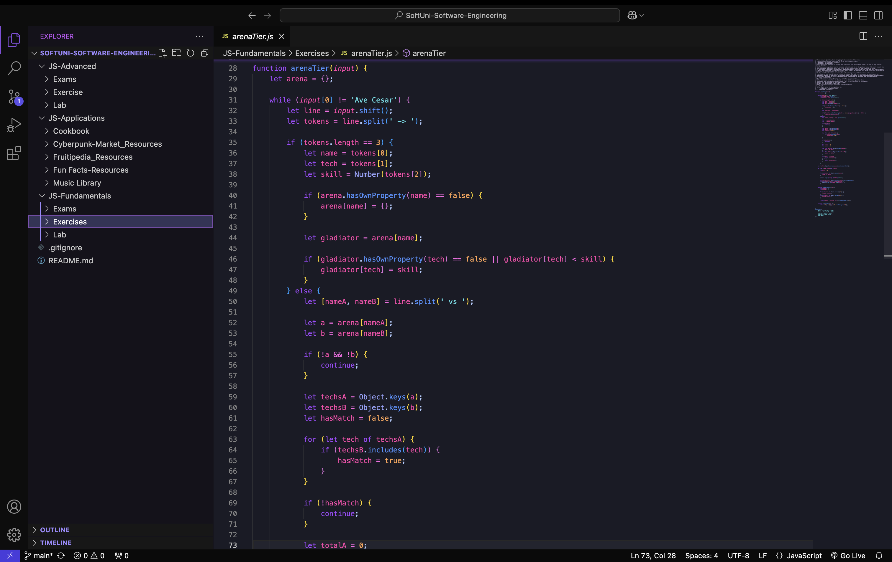

- SoftUni-Software-Engineering е репозитори, в което са качени част от домашните задания и изпити, извършени по време на обучението ми в СофтУни
- В него са включени различни проекти и задачи, които обхващат основни и напреднали теми по JavaScript
- Обобщение на основните умения и знания, които са придобити по време на обучението:
- Работа с основните функционалности на JS
- Работа с линейни данни структури
- Основни умения за работа с HTML и CSS
- Работа с класове и обекти
- Работа с функции и JSON формати
- Извличане на информация и манипулиране на DOM дърво
- Разбиране на концепцията за HTTP и създаване на заявки
- Работа с не-релационни бази данн
- Работа с REST API и асинхронно програмиране